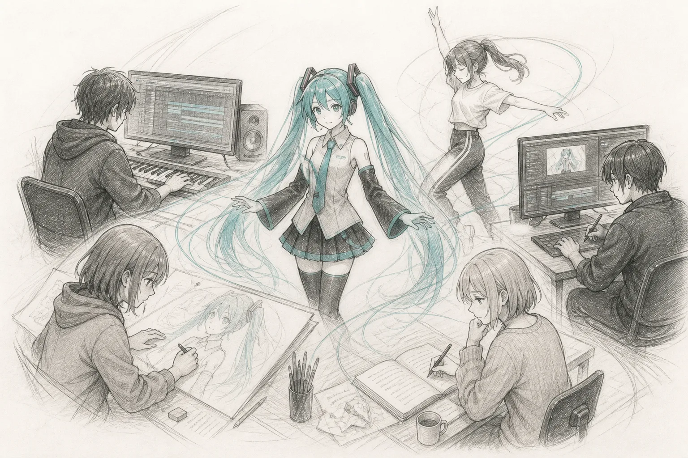
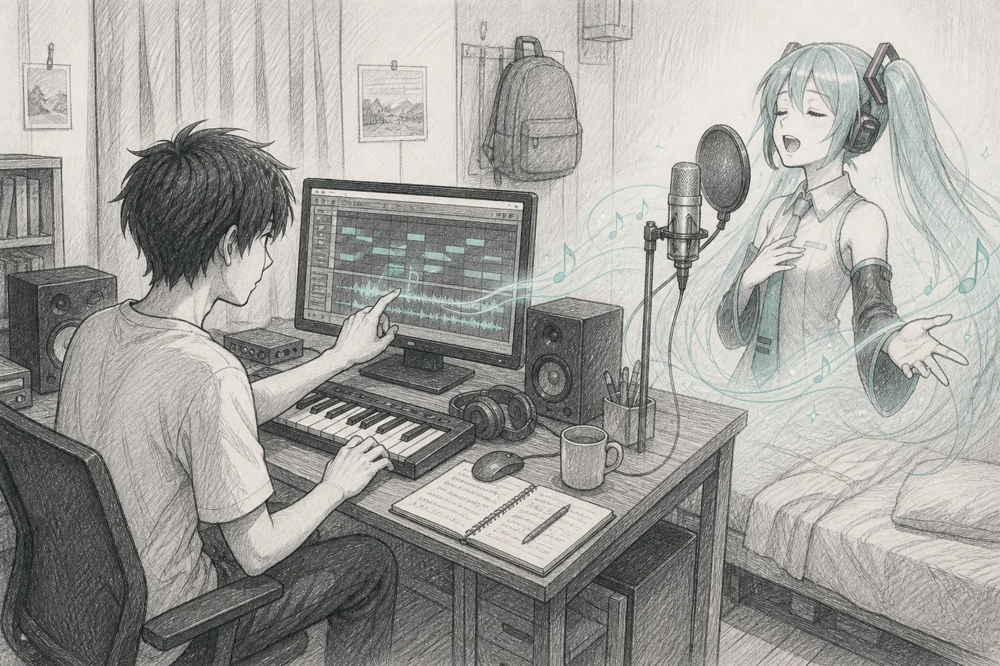
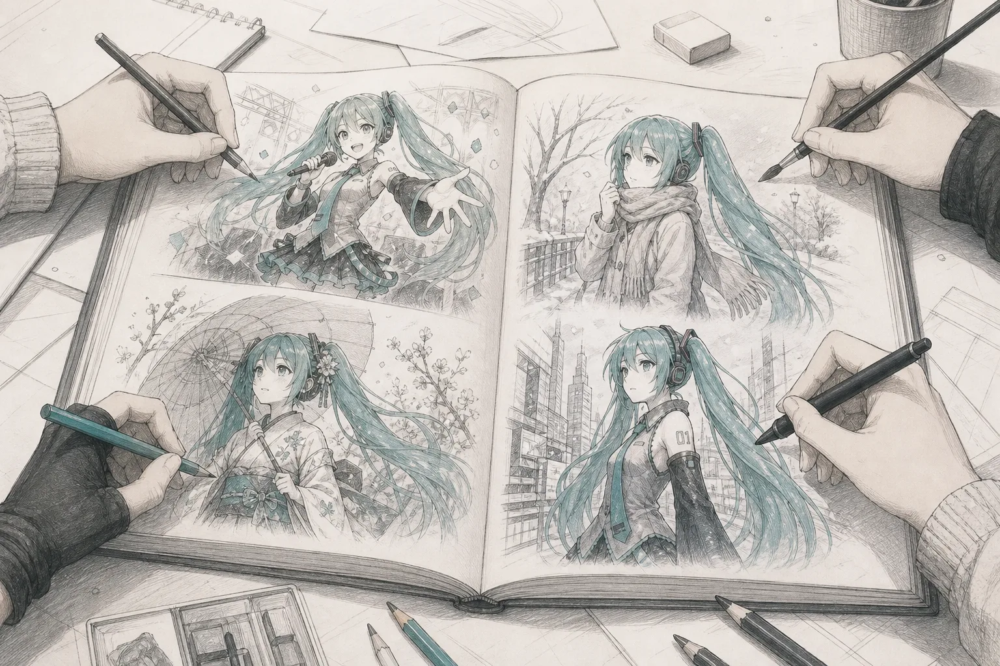
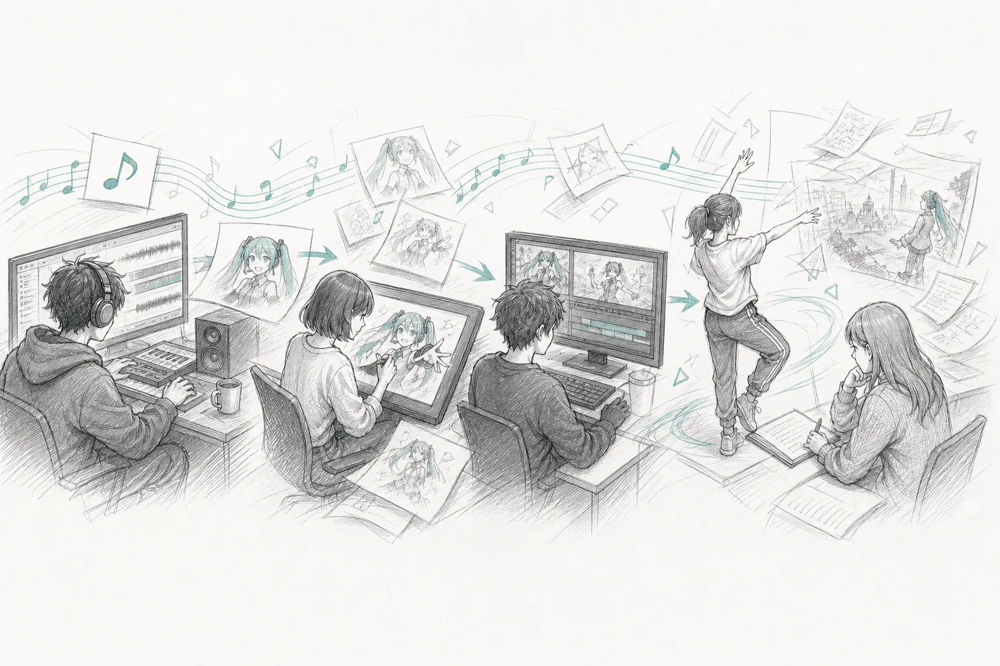
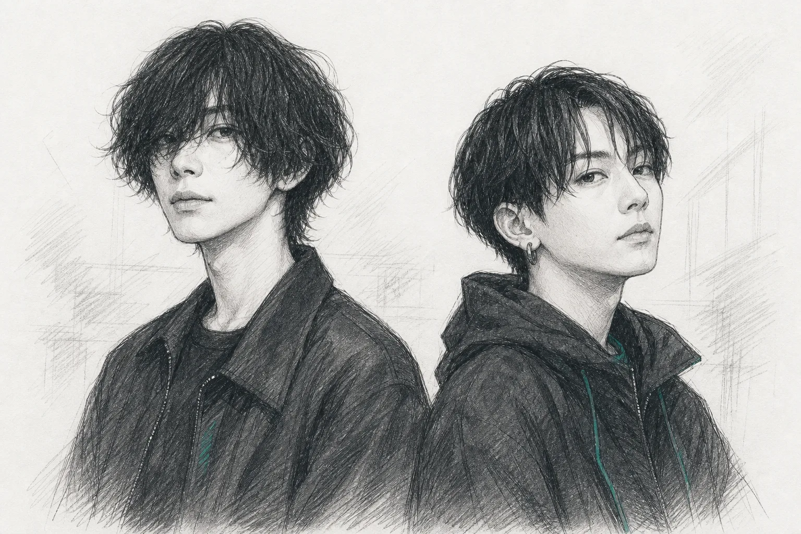

初音ミクは、どのように音楽文化を変えたのか初音未来如何改变了音乐文化
2007年に発売された歌声合成ソフト「初音ミク」は、音楽制作のための道具として登場した。その後、楽曲、イラスト、映像、ダンス、小説など、さまざまな表現を結びつける存在となり、日本のインターネット文化と音楽シーンに大きな変化をもたらした。
2007年推出的歌声合成软件“初音未来”，最初是一款音乐制作工具。此后，她逐渐成为连接歌曲、插画、影像、舞蹈和小说等多种表达形式的存在，也给日本的网络文化与音乐领域带来了明显变化。

歌を作る人に「声」という選択肢を与えた为音乐创作者提供“歌声”
初音ミクは、クリプトン・フューチャー・メディアがヤマハの歌声合成技術「VOCALOID2」を使って開発し、2007年8月31日に発売したソフトウェアである。メロディーと歌詞を入力すると、声優・藤田咲の声をもとに作られた歌声で楽曲を歌わせることができた。
初音未来由 Crypton Future Media 使用雅马哈的歌声合成技术“VOCALOID2”开发，并于2007年8月31日发售。使用者只要输入旋律和歌词，就能让软件以声优藤田咲的声音为基础，合成歌声并演唱歌曲。
それまで、個人の音楽制作者が歌入りの曲を完成させるには、自分で歌うか、歌手を探して録音を依頼する必要があった。初音ミクの登場によって、自宅のコンピューターだけでも歌声を含む楽曲を制作し、インターネットで発表できるようになった。
在此之前，个人音乐创作者要完成一首有人声的作品，只能自己演唱，或寻找歌手并委托对方录音。初音未来出现后，创作者仅靠家用电脑也能制作带有歌声的歌曲，并将作品发布到互联网上。

少ない設定が、創作の余白になった简单的设定，留下了创作空间
発売時に示されたのは、青緑色のツインテールを持つ16歳の少女という外見と、身長158センチ、体重42キロ、得意な音楽ジャンルなどの基本的なプロフィールだった。物語や性格が細かく決められていなかったため、制作者は楽曲に合わせて初音ミクの人物像や世界観を自由に考えることができた。
初音未来发售时公开的设定并不复杂：她是一名留着蓝绿色双马尾的16岁少女，身高158厘米、体重42公斤，同时还有擅长的音乐类型等基本资料。由于官方没有详细规定她的故事和性格，创作者可以根据歌曲自由设计她的形象和所在的世界。
初音ミクは、完成された物語を持つキャラクターではなく、制作者がそれぞれの作品の中で新しい姿を与えられるシンガーとして広がっていった。
初音未来没有一段已经写完的固定故事。她更像是一名可以由不同创作者在各自作品中重新塑造的歌手。

一曲から、絵と映像と物語が生まれた一首歌带来了插画、影像和故事
音楽制作者がニコニコ動画やYouTubeに初音ミクの楽曲を投稿すると、それを聴いた別の利用者がイラストを描き、さらに別の利用者がその絵を使ってミュージックビデオを制作した。歌ってみた動画、ダンス、楽曲のアレンジ、小説なども生まれ、一つの作品から次の作品へと創作が続いていった。
当音乐创作者把初音未来演唱的歌曲上传到 Niconico 动画或 YouTube 后，其他用户会受到歌曲启发，创作相关插画；也有人使用这些插画制作音乐视频。随后又出现了翻唱、舞蹈、改编和小说等内容，一部作品就这样不断带来新的作品。
クリプトン・フューチャー・メディアは2007年12月に投稿サイト「ピアプロ」を開設し、キャラクター利用のためのガイドラインを示した。これにより、非営利の個人による二次創作が行いやすくなり、音楽、絵、文章など異なる分野の制作者が作品を通してつながる環境が整えられた。
2007年12月，Crypton Future Media 开设了投稿平台“Piapro”，并公布角色使用指南。这让个人创作者在非营利范围内更容易进行二次创作，也为音乐、插画和文字等不同领域的创作者提供了通过作品相互合作的环境。
同じ年の12月にryoが発表した『メルト』は、公開から一年間で300万回を超えて再生された。初音ミクというキャラクターだけでなく、楽曲を作るボカロPにも注目が集まるきっかけとなり、その後はハチ、wowakaをはじめ、多くの制作者がインターネットから知られるようになった。
同年12月，ryo发布的《メルト》在公开后一年内播放量超过300万次。这首歌让听众在关注初音未来这一角色的同时，也开始注意歌曲背后的 VOCALOID 创作者。此后，包括Hachi、wowaka在内的许多创作者开始通过互联网受到关注。

日本の音楽文化の一部へ成为日本音乐文化的一部分
2012年には、kzによる『Tell Your World』がGoogle Chromeのグローバルキャンペーンに使用された。インターネットを通じて、名前を知られていない個人の作品も世界へ届けられるという、初音ミクを取り巻く創作文化が広く紹介された。
2012年，kz创作的《Tell Your World》被用于 Google Chrome 的全球宣传活动。作品让更多人了解到围绕初音未来形成的创作文化：即使是没有名气的个人，也有机会通过互联网把作品传向世界。
初音ミクから始まった動きは一時的な流行に終わらず、ボカロPの楽曲を聴いて育った世代にも受け継がれた。米津玄師、Ayaseをはじめ、VOCALOIDを使った制作経験を持つ音楽家が現在の日本の音楽シーンで活動している。初音ミクは、歌声合成ソフトであると同時に、多くの制作者が参加できる音楽文化の入口となった。
从初音未来开始的这股潮流没有停留在短期流行中，而是继续影响着听 VOCALOID 创作者歌曲长大的一代。包括米津玄师、Ayase在内，许多拥有 VOCALOID 创作经历的音乐人如今活跃在日本音乐领域。初音未来既是一款歌声合成软件，也成为许多创作者参与音乐文化的入口。

スクリーンの中から、世界のステージへ从屏幕中走向世界舞台
初音ミクの楽曲が増えるにつれて、その発表の場は動画サイトだけでなくライブ会場にも広がった。3DCGで表現された初音ミクたちがバンドの演奏に合わせて歌うライブでは、観客がペンライトを振り、インターネットで聴いてきた楽曲を会場で共有するようになった。
随着初音未来的歌曲不断增加，作品的展示空间也不再局限于视频网站，而是进一步进入演唱会现场。在由3DCG形象的初音未来等虚拟歌手配合乐队演奏进行表演的演唱会上，观众挥动荧光棒，共同聆听过去只能通过网络接触的歌曲。
2013年に横浜アリーナで初めて開催された「マジカルミライ」には、1万5000人が来場した。このイベントは3DCGライブだけでなく、創作文化に触れられる企画展も同時に行う形式を取り、その後もファンとクリエーターが集まる恒例イベントとして続いている。
2013年，第一届“魔法未来（マジカルミライ）”在横滨体育馆举办，共有1.5万人到场。活动不只包括3DCG演唱会，还同时设置了让观众接触相关创作文化的企划展。此后，“魔法未来”持续举办，逐渐成为粉丝与创作者定期聚集的活动。
海外では、世界ツアー「HATSUNE MIKU EXPO」が2014年5月にインドネシアのジャカルタから始まった。公式の10周年資料によると、2024年5月までに世界30都市で68公演を実施。その後もアジア、北米、ヨーロッパ、オセアニアへ開催地域を広げている。ライブに加えて、展示、ワークショップ、クラブイベントなども行われ、各地のファンが初音ミクを取り巻く創作文化に触れられる場となった。
海外方面，世界巡演“HATSUNE MIKU EXPO”于2014年5月从印度尼西亚雅加达开始。根据官方十周年资料，截至2024年5月，巡演已经在全球30座城市举办68场演出。此后，活动继续扩展至亚洲、北美、欧洲和大洋洲。除演唱会外，现场还会举办展览、工作坊和俱乐部活动，让不同地区的粉丝接触围绕初音未来形成的创作文化。
海外公演が難しかった時期には、2021年のオンラインコンサート、2022年の「MIKU EXPO Rewind」、2023年のVR配信が行われた。初音ミクのライブは会場だけに限定されず、オンラインも使いながら世界の観客とつながる形へと広がった。
在难以举办海外现场演出的时期，主办方又先后推出2021年线上演唱会、2022年的“MIKU EXPO Rewind”和2023年的VR直播。初音未来的演出不再只依赖实体会场，也通过线上形式继续连接世界各地的观众。
こうしたイベントでは、音楽だけでなく、イラスト、衣装、映像、ダンス、ファンによる作品なども同じ場所に集まる。初音ミクを中心に生まれた創作文化は、インターネットの投稿から始まり、国内イベントと世界ツアーを通じて、多くの人が参加する文化へと発展した。
在这些活动中，音乐、插画、服装、影像、舞蹈和粉丝创作会集中出现在同一个空间。围绕初音未来形成的创作文化从网络投稿开始，又通过日本国内活动和世界巡演，逐渐发展为更多人可以参与的文化现象。
让我们来一起欣赏一下初音未来的魅力吧
前往 Bilibili 观看